Aqui estão os seis principais biomas presentes no território brasileiro:

Amazônia
A maior floresta tropical do mundo, abriga uma biodiversidade
incomparável, com uma variedade impressionante de plantas, animais e
ecossistemas. É crucial para a regulação climática global e enfrenta
desafios como o desmatamento e a degradação ambiental.
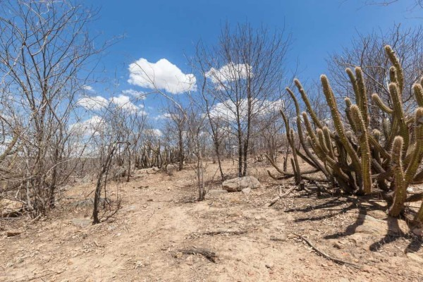
Caatinga
O bioma mais árido do Brasil, com uma vegetação adaptada à escassez
de água, incluindo plantas xerófitas e cactos. Apesar das condições
adversas, possui uma biodiversidade única, mas está sujeito à
desertificação e degradação devido às atividades humanas.
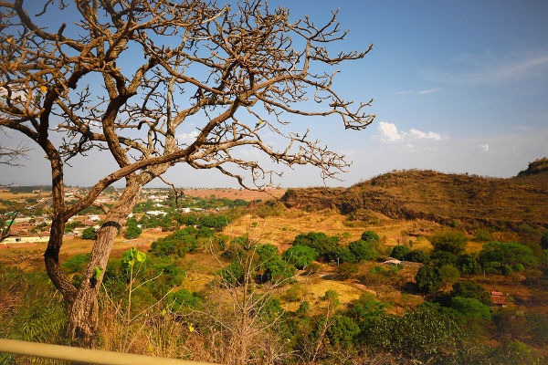
Cerrado
Conhecido como a savana brasileira, é caracterizado por uma
vegetação diversificada, com árvores baixas, arbustos e gramíneas.
Abriga uma rica diversidade de flora e fauna, mas enfrenta ameaças
significativas devido à expansão agrícola e pecuária.
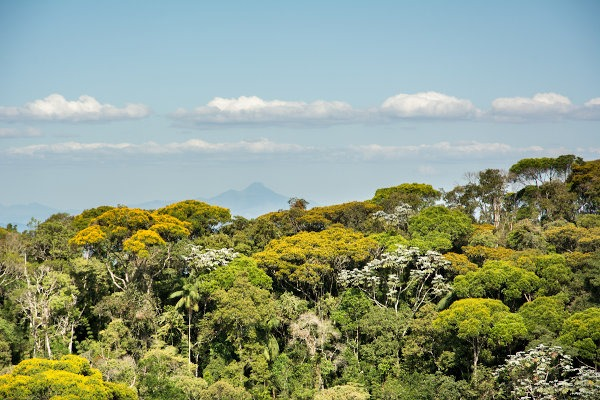
Mata Atlântica
Originalmente estendendo-se ao longo da costa brasileira, hoje é um
dos biomas mais ameaçados, com apenas uma fração de sua cobertura
original restante. Abriga uma grande diversidade de espécies
vegetais e animais, mas enfrenta pressões devido à urbanização,
agricultura e desmatamento.
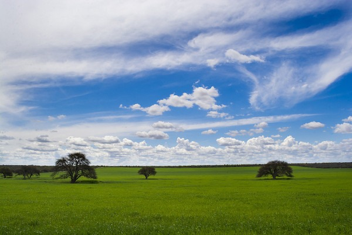
Pampa
Bioma de campos abertos no sul do Brasil, caracterizado por
vegetação de gramíneas, matas de galeria e bosques. Abriga
diversidade de flora e fauna, mas enfrenta ameaças devido à
agricultura e pecuária intensiva, resultando em perda de habitat e
fragmentação do ecossistema.
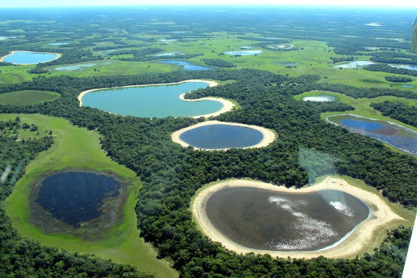
Pantanal
Maior planície alagável do mundo, é uma importante área de
biodiversidade, com uma variedade única de habitats aquáticos e
terrestres. É lar de uma abundância de espécies animais, incluindo
aves, peixes, mamíferos e répteis, mas está enfrentando ameaças
crescentes devido ao desmatamento, poluição e mudanças climáticas.
Amazônia
Estados do Brasil: Amazonas, Pará, Acre, Rondônia, Amapá, Roraima,
Tocantins, parte do Maranhão e parte do Amapá.
Área de extensão: Aproximadamente 5,5 milhões de km².
Características da flora: Diversidade extraordinária, incluindo árvores gigantes, palmeiras, lianas e uma grande variedade de plantas medicinais.
Características da fauna: Inclui jaguares, onças-pintadas, tamanduás, preguiças, macacos, aves como araras e tucanos, e uma enorme diversidade de peixes, répteis e insetos.
Área de extensão: Aproximadamente 5,5 milhões de km².
Características da flora: Diversidade extraordinária, incluindo árvores gigantes, palmeiras, lianas e uma grande variedade de plantas medicinais.
Características da fauna: Inclui jaguares, onças-pintadas, tamanduás, preguiças, macacos, aves como araras e tucanos, e uma enorme diversidade de peixes, répteis e insetos.
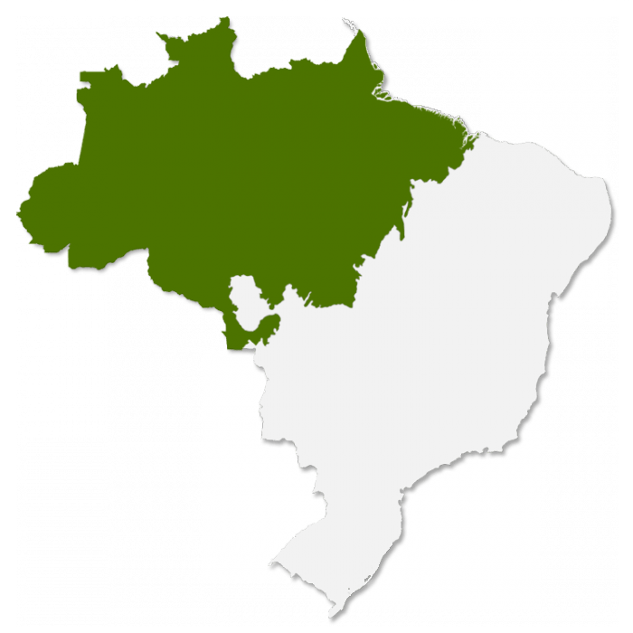
Caatinga
Estados do Brasil: Alagoas, Bahia, Ceará, Maranhão, Pernambuco,
Paraíba, Rio Grande do Norte, Sergipe, parte do Piauí e parte do
norte de Minas Gerais.
Área de extensão: Cerca de 800 mil km².
Características da flora: Vegetação adaptada à seca, com cactos, arbustos espinhosos, árvores de pequeno porte e plantas suculentas.
Características da fauna: Adaptada à escassez de água, incluindo espécies como o tatu-bola, o mico-leão-dourado, o gato-mourisco, serpentes, aves como o carcará e o gavião-real, além de uma variedade de répteis.
Área de extensão: Cerca de 800 mil km².
Características da flora: Vegetação adaptada à seca, com cactos, arbustos espinhosos, árvores de pequeno porte e plantas suculentas.
Características da fauna: Adaptada à escassez de água, incluindo espécies como o tatu-bola, o mico-leão-dourado, o gato-mourisco, serpentes, aves como o carcará e o gavião-real, além de uma variedade de répteis.
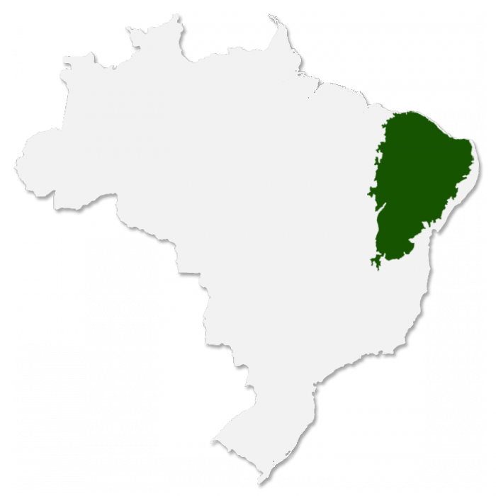
Cerrado
Estados do Brasil: Goiás, Mato Grosso, Mato Grosso do Sul,
Tocantins, Minas Gerais, Bahia, Maranhão, Piauí, Rondônia, São
Paulo, Paraná e Distrito Federal.
Área de extensão: Cerca de 2 milhões de km².
Características da flora: Vegetação composta por árvores baixas, arbustos e gramíneas resistentes à seca, incluindo espécies como o ipê, o pequi e o buriti.
Características da fauna: Diversidade de animais, incluindo lobo-guará, tamanduá-bandeira, tatu-canastra, emas, araras, seriemas e uma variedade de répteis e insetos.
Área de extensão: Cerca de 2 milhões de km².
Características da flora: Vegetação composta por árvores baixas, arbustos e gramíneas resistentes à seca, incluindo espécies como o ipê, o pequi e o buriti.
Características da fauna: Diversidade de animais, incluindo lobo-guará, tamanduá-bandeira, tatu-canastra, emas, araras, seriemas e uma variedade de répteis e insetos.
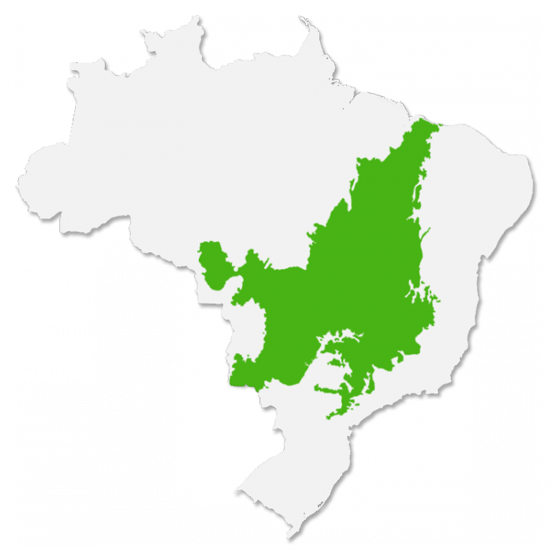
Mata Atlântica
Estados do Brasil: Abrange todos os estados da costa leste
brasileira, desde o Rio Grande do Norte até o Rio Grande do Sul.
Área de extensão: Originalmente, cerca de 1,3 milhão de km², hoje restam menos de 100 mil km².
Características da flora: Grande diversidade de espécies arbóreas, epífitas, lianas e samambaias, incluindo exemplares como a figueira, a canela e o pau-brasil.
Características da fauna: Rica em biodiversidade, com espécies como o mico-leão-da-cara-dourada, o muriqui, a onça-pintada, o tucano, o papagaio e uma variedade de anfíbios e répteis.
Área de extensão: Originalmente, cerca de 1,3 milhão de km², hoje restam menos de 100 mil km².
Características da flora: Grande diversidade de espécies arbóreas, epífitas, lianas e samambaias, incluindo exemplares como a figueira, a canela e o pau-brasil.
Características da fauna: Rica em biodiversidade, com espécies como o mico-leão-da-cara-dourada, o muriqui, a onça-pintada, o tucano, o papagaio e uma variedade de anfíbios e répteis.
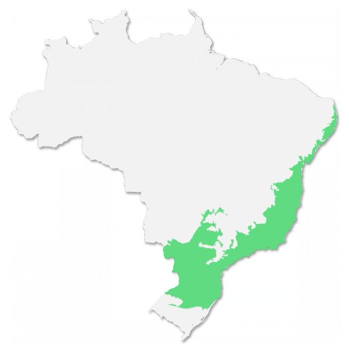
Pampa
Estados do Brasil: Rio Grande do Sul.
Área de extensão: Cerca de 176 mil km².
Características da flora: Vegetação composta principalmente por campos abertos, com predominância de gramíneas como o capim-barba-de-bode, algumas árvores isoladas e matas de galeria ao longo dos rios.
Características da fauna: Inclui espécies como o veado-do-pampa, o lobo-guará, a jaguatirica, aves como o quero-quero e o chimango, além de uma variedade de répteis e pequenos mamíferos.
Área de extensão: Cerca de 176 mil km².
Características da flora: Vegetação composta principalmente por campos abertos, com predominância de gramíneas como o capim-barba-de-bode, algumas árvores isoladas e matas de galeria ao longo dos rios.
Características da fauna: Inclui espécies como o veado-do-pampa, o lobo-guará, a jaguatirica, aves como o quero-quero e o chimango, além de uma variedade de répteis e pequenos mamíferos.
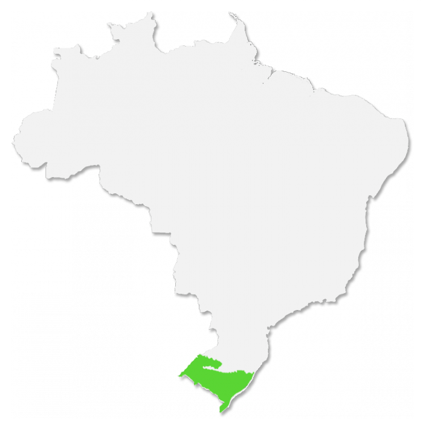
Pantanal
Estados do Brasil: Mato Grosso e Mato Grosso do Sul.
Área de extensão: Cerca de 150 mil km² durante a estação seca, podendo chegar a até 250 mil km² durante a estação chuvosa.
Características da flora: Vegetação adaptada a ambientes alagados, incluindo gramíneas, palmeiras, árvores como o ipê e o aroeira, e plantas aquáticas como o aguapé.
Características da fauna: Rico em biodiversidade, com espécies como a onça-pintada, o cervo-do-pantanal, a capivara, o jacaré, a arara-azul, o tuiuiú e uma variedade de peixes, répteis e aves aquáticas.
Área de extensão: Cerca de 150 mil km² durante a estação seca, podendo chegar a até 250 mil km² durante a estação chuvosa.
Características da flora: Vegetação adaptada a ambientes alagados, incluindo gramíneas, palmeiras, árvores como o ipê e o aroeira, e plantas aquáticas como o aguapé.
Características da fauna: Rico em biodiversidade, com espécies como a onça-pintada, o cervo-do-pantanal, a capivara, o jacaré, a arara-azul, o tuiuiú e uma variedade de peixes, répteis e aves aquáticas.
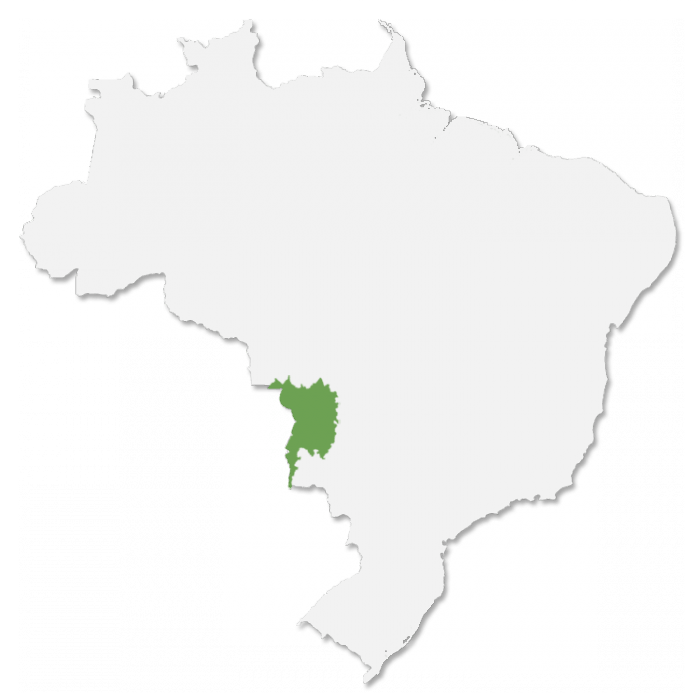